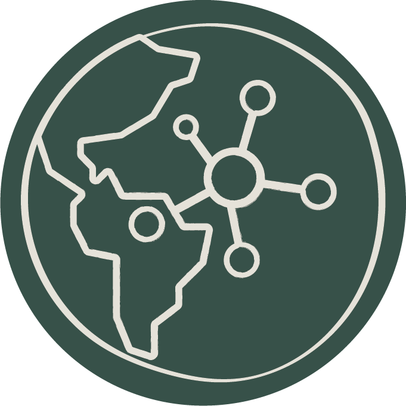

¿Qué es SIGETI?
Es una herramienta para la toma de decisiones, el posicionamiento, la comunicación, gestión, coordinación
dentro y fuera del territorio partiendo de la información territorial para el ejercicio de gobierno de
la ETI
La construcción e implementación del SIGETI dotaría de acceso a información clara, pertinente, suficiente
y oportuna a las ETI y sus gobiernos, logrando el desarrollo de, al menos, estos cuatro puntos.
-
-

- 
La iniciativa SIGETI, se está desarrollando en un esquema por fases; cada fase se articula bajo un
modelo general permitiendo que, de manera incremental, se avance en el desarrollo del sistema en dos
vías, los procesos de avance temático de conceptualización y el desarrollo de herramientas
informáticas.
En este sentido, los componentes del SIGETI se irán definiendo con el tiempo, con la participación
de los pueblos indígenas, como usuario principal de Sistema, y serán desarrollados en tanto existan
estas claridades.
Para cumplir ese objetivo se requieren unas condiciones previas, como son la apropiación de
herramientas por parte de los usuarios, especialmente indígenas, el diseño y construcción de
herramientas de gestión y de recolección de información que implican la aplicación de estándares de
calidad y construcción intercultural con los pueblos indígenas. Una vez la información está
disponible para los gobiernos indígenas, establecen una posición informada que les permite iniciar
el diálogo intercultural para ejercicios de coordinación, cooperación y toma de decisiones
acertadas.
Roles del sistema
- Administrador SIG
- Administra el SIGETI. Tiene acceso a todas las funcionalidades e información del sistema.
Realiza:
- La gestión de usuarios y privilegios
- El registro y publicación de capas base, temáticas y de indicadores.
- La parametrización de escenarios de visualización y consulta.
- Y demás tareas de actualización y mantenimiento del SIGETI.
- Gestor de datos
- Gestores de datos temáticos (Asesores e Indígenas):
Realizan la captura en campo de la información requerida para la construcción de la línea
base territorial (variables temáticas del SIGETI) y el cálculo de los indicadores.
Gestores de datos técnicos (Equipo SIG-SIGETI): Realizan la:
- Estructuración y estandarización de datos secundarios,
- El desarrollo de modelos para la automatización de indicadores,
- El procesamiento e implementación de modelos para el cálculo de indicadores
- El reporte de datos finales.
- Usuario común con credenciales
- Usuario que SI cuenta con credenciales de autenticación en el SIGETI, tiene permisos de
consulta, visualización y descarga de la información pública y restringida.
- Usuario común anónimo
- Usuario que NO cuenta con credenciales de autenticación en el SIGETI, tiene permisos de consulta
y visualización de la información pública.